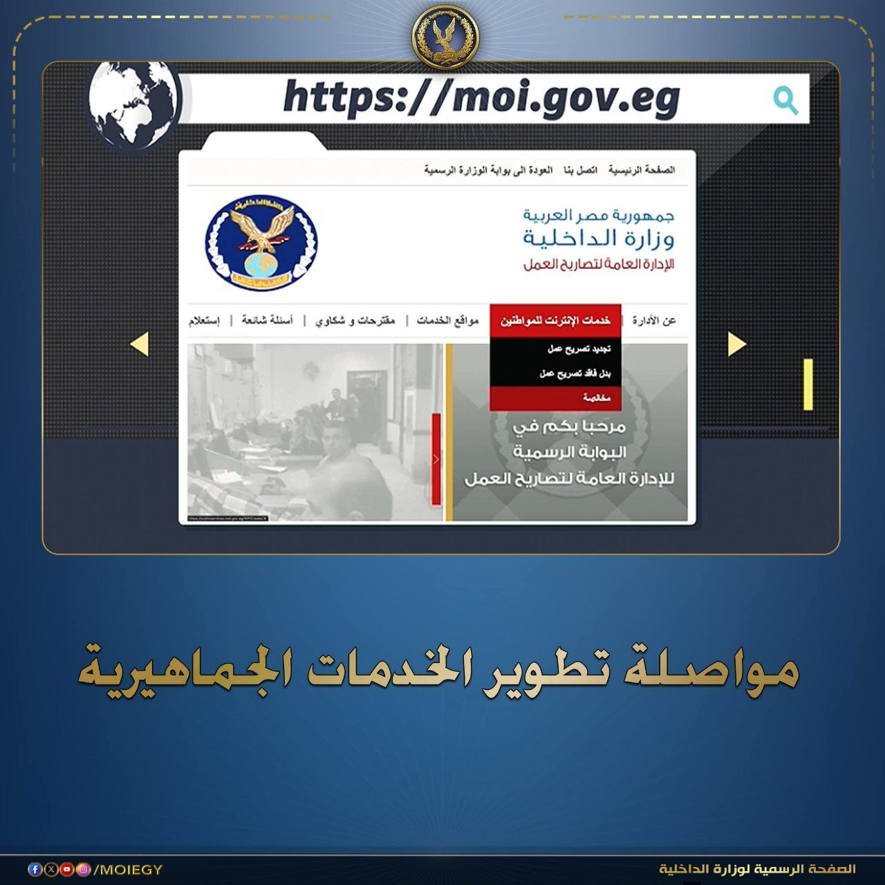
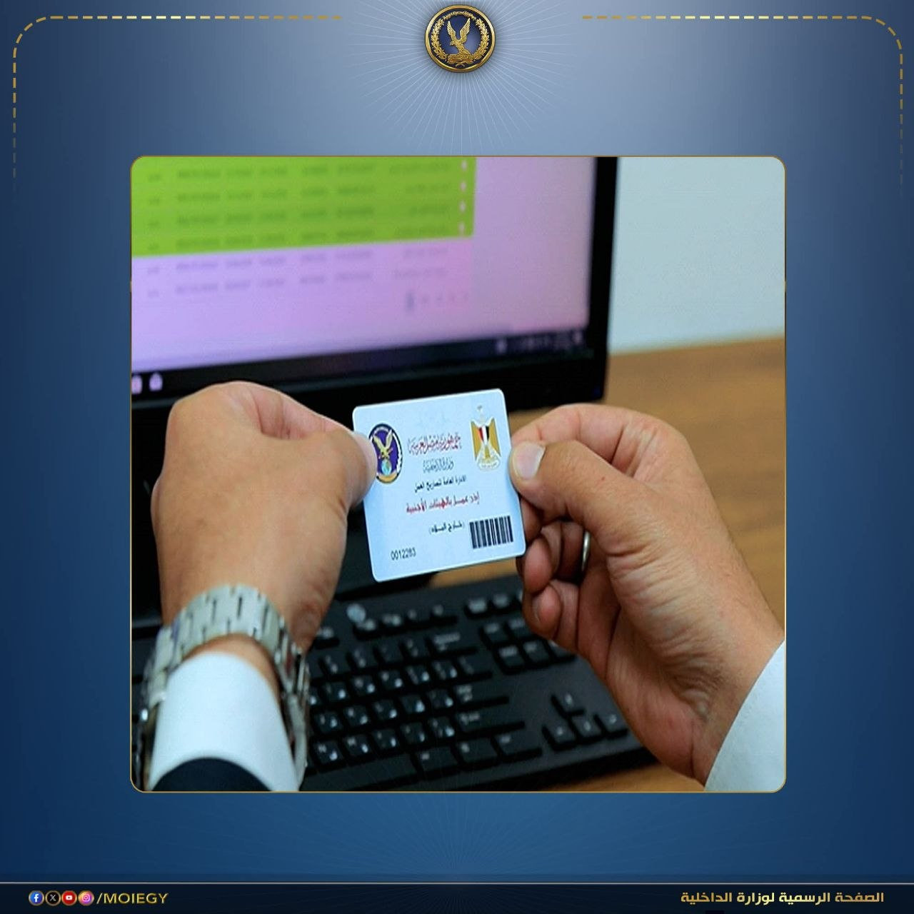
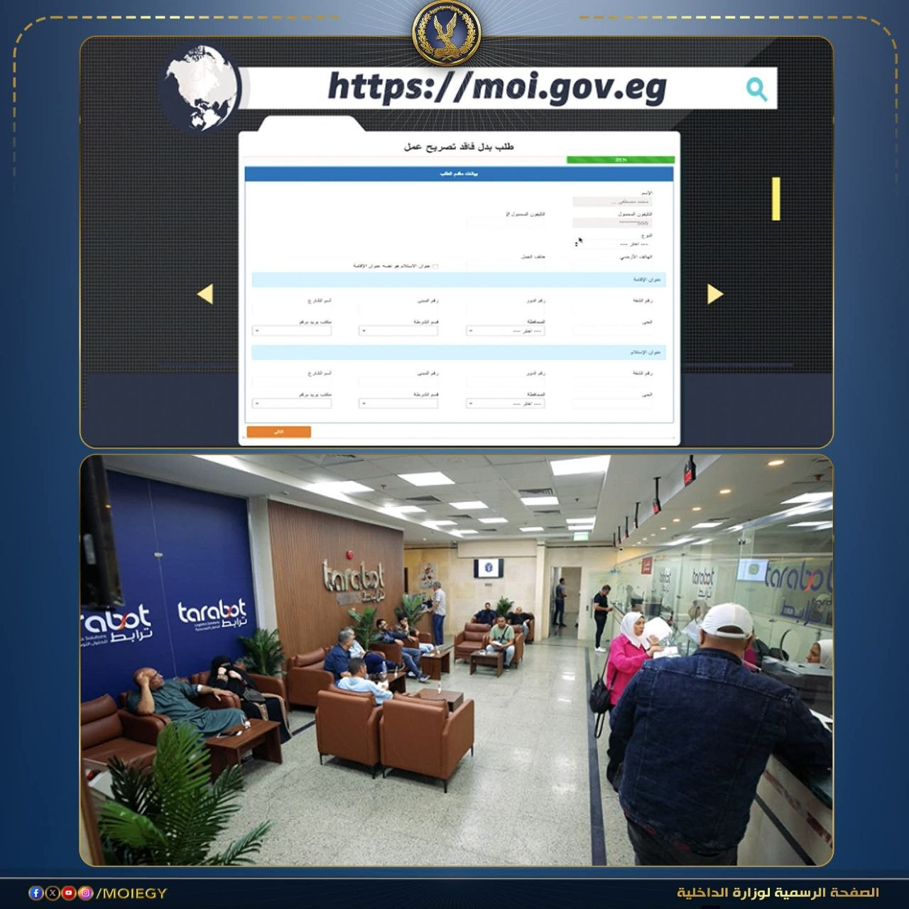
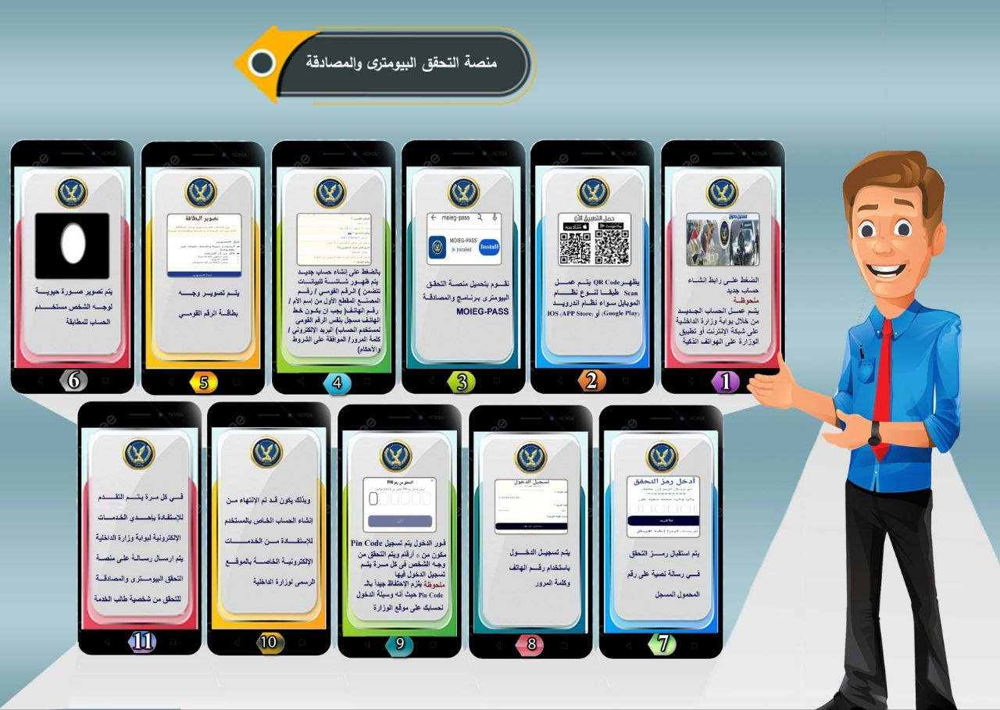

نَبْضُ الدَّاخِلِيَّةِ



إستمراراً لنهج وزارة الداخلية فى تطوير خدماتها، شهدت الإدارة العامة لتصاريح العمل نقلة نوعية تتوافق مع التحول الرقمي. المنظومة أصبحت موحدة وتدار إلكترونياً بالكامل عبر "شباك واحد"، مع تحويل التصريح إلى كارت ذكي بدلاً من الورقي.
تم استداث خدمة مميزة لإخراج التصريح خلال 30 دقيقة فقط، متاحة أيضاً عبر الموقع الرسمي: moi.gov.eg
التطوير الجديد يربط جميع الوحدات بـ قاعدة بيانات الرقم القومي، وسيبدأ التشغيل الكامل بمحافظة القاهرة إعتباراً من الأحد 26 أبريل 2026، تمهيداً لتعميمه على مستوى الجمهورية.
